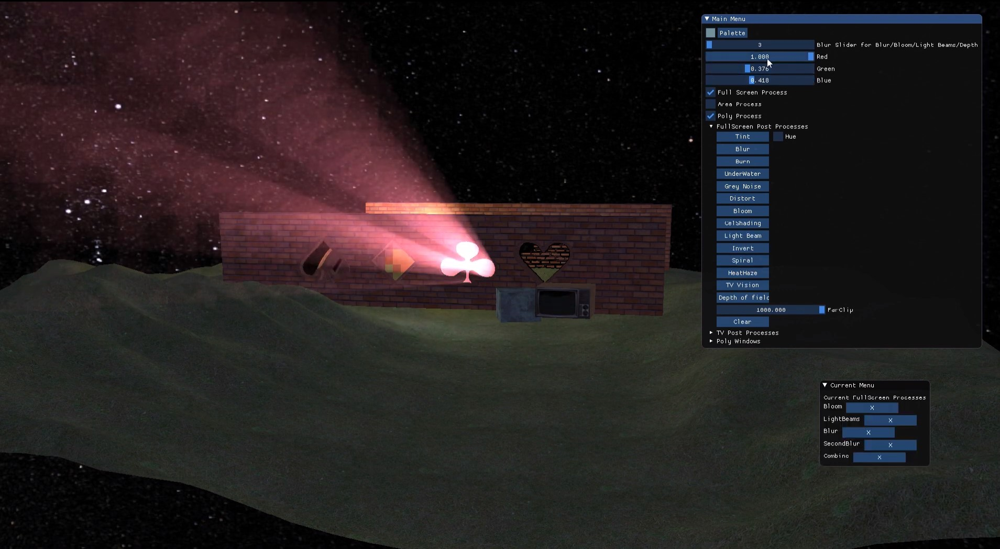
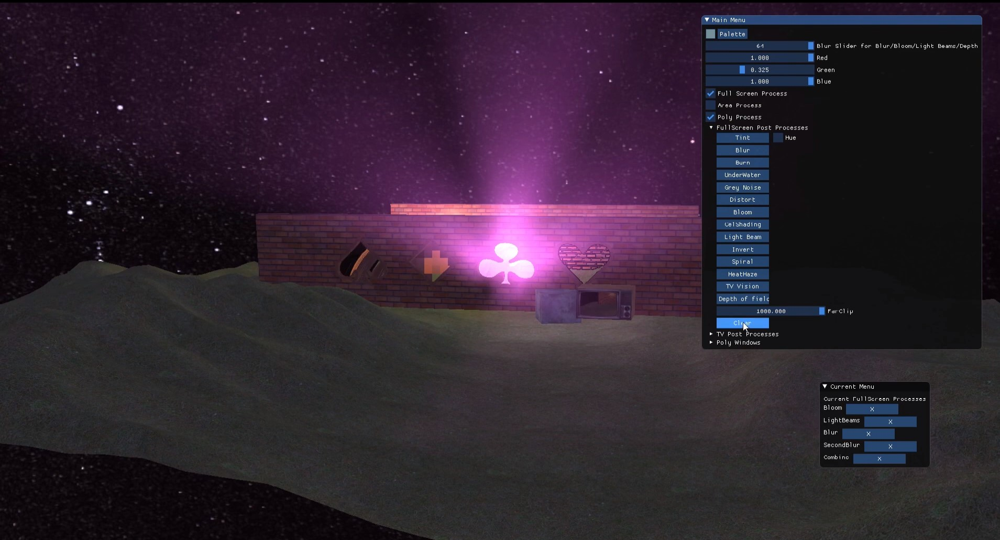
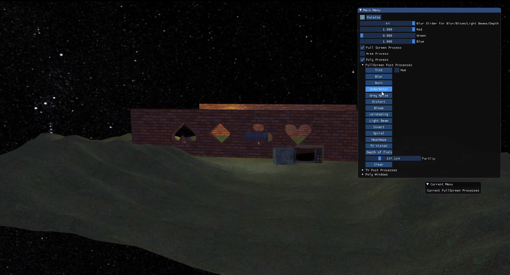

POST PROCESSING
INTRODUCTION
This project is my University 3rd year Graphics assignment. The intention of the project was to
show off Post processing effects. We had to take a basic shader project and add the ability to chain
shaders. I went above and beyond on this project adding in my own shader effects. My favourite effect is the
God rays (Crepuscular rays). Using HLSL shaders I created a number of different effects for example Gaussian
blur, pixelated, cell shaded, god rays… This project became very addictive every time I improved my shader
processing code new shader effect possibilities would be available.
Features
- Shader Chaining
- imgui
- Multi camera post processing
God Rays
My Implementation of God rays required Effect Chaining this because multiple effects were needed
to
create the god rays. Firstly, I needed to discard all the dark areas in the render target which would leave
me
with the brightest pixels (This is like the Bloom Shader). Secondly the manipulated render target would get
passed to the God ray shader which would sample the render target make it bigger and layer it over the
original, the number of times its samples/Layers can be set in imgui. Lastly, I added one more shader pass
which was Gaussian Blur. This last shader pass was due to being able to see the individual layers of the god
rays this could be fixed by increasing the sample size but would cause a lot of hanging and slow down. Or
you could do a last shader pass of Gaussian Blur which would blend all the layers together. I added examples
below.
God Rays No Gaussian Blur

God Rays with Gaussian Blur
God Rays Other example

Gaussian Blur
Gaussian Blur emerges as an invaluable technique, seamlessly synergizing with other
post-processing effects to elegantly conceal imperfections and seamlessly fuse images, erasing discernible
artifacts. Within my Gaussian blur implementation, I harnessed the potency of a two-dimensional array,
serving as the vessel for my convolution matrix. This matrix finds its purpose in the GPU realm,
orchestrating a delicate dance upon the canvas of an image. Executing this effect mandates a choreography of
two shader passes: the first orchestrates a horizontal blur, while the second conducts a vertical blur,
culminating in an exquisite symphony of visual refinement.
Gaussian Blur example
No Gaussian Blur example

Cell Shaded
Cell shading is a graphics technique used in art, animation, and games to make objects look like they're
from a cartoon or comic book. Instead of realistic shading, it uses flat colors, bold outlines, and simple
lighting to create a distinct and artistic appearance. A popular game to use this effect is Borderlands. My
example of cel shading is a fake version as it takes an image samples and area and works out what it thinks
are edges and colours them black.
Cell Shaded example
No Cell Shaded example